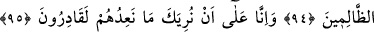
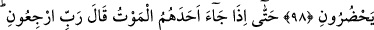
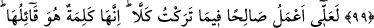
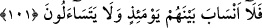
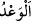

ŞEYTANLARIN KIŞKIRTMALARINDAN
SANA SIĞINIRIM!
93. (Rasûlüm!) De ki: “Rabbim! Eğer onlara yöneltilen tehdidi mutlaka bana
göstereceksen;
94. Bu durumda beni zalimler topluluğunun içinde bulundurma Rabbim!”
95. Biz, onlara yönelttiğimiz tehdidi sana göstermeye elbette ki kadiriz.
96. Sen, kötülüğü en güzel bir tutumla sav. Biz onların yakıştırmakta oldukları
şeyi çok iyi bilmekteyiz.
97. Ve de ki: Rabbim! Şeytanların kışkırtmalarından sana sığınırım!
98. Onların yanımda bulunmalarından da sana sığınırım, Rabbim!
99. Nihayet onlardan (müşriklerden) birine ölüm gelip çattığında der ki:
“Rabbim, beni geri gönder;”
100. “Belki ben terk ettiğim şey hususunda bir sâlih amel işlerim.” Hayır! Bu
onun ağzından çıkan (boş) bir laftan ibarettir. Onların önlerinde ise, yeniden
dirilecekleri güne kadar (süren) bir berzah vardır.
101. Sûra üflendiği zaman artık aralarında akrabalık bağları kalmamıştır;
birbirlerini de arayıp sormazlar.
“
tehdid) ” hayır-şer, iyi-kötü, fayda-zarar için kullanılır.
Rasûlüm! “De ki: “Rabbim! Eğer onlara” müşriklere “yöneltilen tehdidi” köklerini
kazıyacak dünyevî azabı “mutlaka bana göstereceksen;”